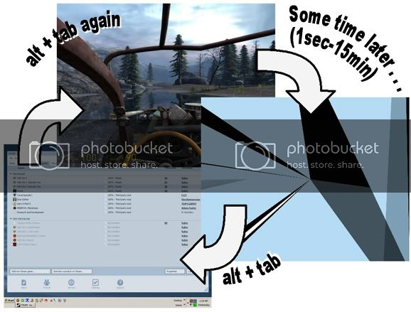

Just wait until your computer fucks up and then people will be laughing at your problems. 
Like i said, screenshots are pointless because it’s just 4 or 5 solid colors.
i’m not too worried about having problems with Black Mesa as i’ve already found a work-around. it’s just real funny how i can’t seem to find the cause of the problem. it’s difficult to troubleshoot when you can’t find a common denominator.
-Kawai Tei-
you should try a different video card if you can to see, does not matter if you think that it cool enough or not just try another card then you can say you tried and move on to other solutions.
Or maybe something screwed up with your PC. Have you downloaded anything that was suspicious lately? Maybe you should try a windows system restore to restore your computer back to the day before the problems started. Stuff always fucks up with my PC. One time my PC keep restarting itself after every 2 or 5 minutes. I went into safe mode and restored to an earlier time and it fixed the problem.
A few questions-- you said it affects Steam games. Do you mean Valve games? Secondly, you said that your games are back to normal. Is the problem completely gone then, or was it only fixed temporarily?
If it’s all Steam games it’s probably something to do with the Steam Community Overlay.
That was actually the FiRST thing that i assumed.
…'cept Steam’s little notices in the bottom-right corner seem to pop up just fine. At least they usually do. i also tried killing gameoverlayui.exe, but like i said, just minimizing the game makes the problem go away so there’s no way of knowing FOR SURE if the overlay was what caused the problem. shrug
i just disabled in-game Steam messages, but i’m still not sure if that’s what fixed it. Oh well. At least i can play for more than 10 minutes now! YAY!
-Kawai Tei-
UPDATE!!
Before, i was just having the video problem while playing through mods. The few mods i had to play were all short and i’d only experienced the issue 3 or 4 times per game. Once i was finished playing them, i went back to replay Half-Life2. i finished the whole game with NO PROBLEMS. i thought it had just gone away…
i played through Episode One…and dealt with the problem once or twice through the game. Just last night, i finished that game too. i still had no explanation of what was causing the problem but i found a work-around; oh well. Let’s move on.
i just started Episode Two…AND THE PROBLEM WON’T STOP!! i just got to the antlion caves and now i can’t play for more than 20 or 30 seconds before i get slapped with a big dark-blue screen. i can minimize and maximize the game to fix the problem but that only lasts for a minute, if that.
i’m tempted to take a video sample of this phenomenon but i doubt it’d help illustrate the issue. if Black Mesa makes use of whatever effect is screwing with my video, i may not be able to enjoy it…OR Episode Two. :’(
EDiT : Either Murphy’s Law has taken over or FRAPS somehow stops whatever the causes the problem. i’ve been trying to record it for the last 30 minutes and it never seems to happen while i’m recording! it’s like whenever you call the plumber, the toilet magically drains and the clog disappears!
-Kawai Tei-
UPDATE!!
i was finally able to record the glitch in FRAPS! i don’t have a YouTube account and i can’t seem to make an animated gif with a reasonable file size. Recently i bought Portal and my screen seems to go completely black this time (save for my mouse cursor) which leads me to believe that the overwhelming blue in Episodes is part of the skybox…if that helps.
i apologize for posting and reposting, but i’m so desperate to get these games to work! Since BM is built on the Episodes engine, i can only imagine how frustrating it’ll be to play if i can’t play through 2 rooms in Portal without having to minimize and maximize the game 6 times! :’(
-Kawai Tei-
Make sure your bios and all your drivers are updated.
Done and done.
-Kawai Tei-
Man up and make a youtube account so we can see this thing. If you want us to help you’ll have to put in a little effort yourself.
Still no video but…

…this help?
The screen goes funky after anywhere between a few seconds and several minutes. Sometimes it won’t happen at all! it’s been happening a LOT in Episode2 right after reaching White Forest. As soon as the place comes under attack and hunters first appear, the screen turns dark colors every 10-20 seconds! But like i said before, all i gotta do is alt+tab out of the game and alt+tab back in…but it’s only fixed for 10 seconds or so, i go blind, get shot, die, minimize, maximize, reload, repeat. if i look around (with the mouse), the dark bars move like a kaleidoscope.
i even reinstalled DirectX…no luck.
EDiT :
Sorry about the filesize (500k+). This is a sample of the glitch in motion, once the screen freaks out.
-Kawai Tei-
i had this same problem 2 days ago after installing a mod. i uninstalled the mod and removed its folder and everything started working again.
Well, the only mods i have installed are all independent and only use the SDK. Episodes and Portal are completely untouched except for an alternate zombie skin i installed in HL2 and both Episodes. This problem’s been showing up long before i added the zombie skin.
The mods i have installed are : Curse, Dear Esther, Garry’s Mod 9,Minerva: Metastasis and Research & Development. None of these add anything or make any changes to Episodes or Portal.
-Kawai Tei-
Did you try changing the dxlevel?
Open the properties dialog for ep2 for example and add -dxlevel 81 or 90 at the end of the target box.
somethings broke
is that something i can do in Steam by adding “-dxlevel81” to launch options?
Will give that a try when i get home from work!
-Kawai Tei-
-dxlevel 81
not -dxlevel81
So far so good. Gonna wait for a while before i dub this “fixed”. Like i’ve said before, i’ve been able to play for a pretty long time before it’s happened again. it happens so randomly. it could happen again in 3 hours or 3 minutes.
By dropping to DirectX8, what differences are visible in the quality of the game?
Edit : i can already see that the Portals in Portal look really boring. There’s no…shall we say “radiation” coming from them. i assume i’ll be losing some particle and smoke effects by downgrading?
-Kawai Tei-